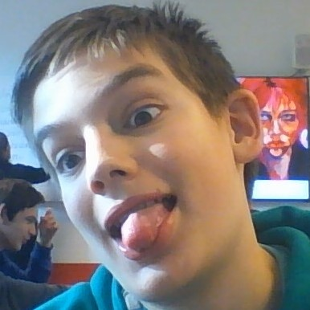
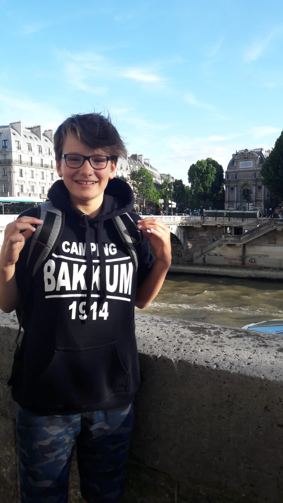

Ik ben Elena. Ik woon in Amsterdam en zit op Het Metis Montessori Lyceum. Op de foto zie je mij met mijn puppy.
Hij heet Tartufo en hij is van 23 Januari. Hij is Lagotto Romagnolo.
Ik ben Elena. Ik woon in Amsterdam en zit op Het Metis Montessori Lyceum. Op de foto zie je mij met mijn puppy.
Hij heet Tartufo en hij is van 23 Januari. Hij is Lagotto Romagnolo.
Dit is mijn tweede jaar op het metis. Ik zit op het VWO. Ik doe al vanaf de eerste de coderclass en ik vind het nog steeds ontzettend leuk!
Voor de coderclass moeten wij ook deze website maken in opdracht van Nicky Nibbeling.
In mijn vrije tijd rijd ik paard. Zowel dressuur als springen. Springen doe ik, omdat ik het ontzettend leuk vind en dressuur
doe ik voornamelijk om mijn paardrijden te onderhouden
Hier is een link naar mijn eigen website die ik voor HTML-CSS 2 moest maken!
E-profile

Ik ben Aidan. Ik woon in Zwanenburg en zit op Het Metis Montessori Lyceum. Op de foto zie je mij gek doen zoals altijd.
Ik had een hond hij is nu dood.
Dit is mijn tweede jaar op het metis. Ik zit op het VWO. Ik doe al vanaf de eerste de coderclass en ik vind het nog steeds ontzettend leuk!
Voor de coderclass moeten wij ook deze website maken in opdracht van Nicky Nibbeling.
In mijn vrije tijd speel ik games want ik ben lui maar ik speel wel tennis wanneer ik gedwongen wordt.
Dit zijn de websites die ik heb moeten maken voor HTML-css 1 want ik ben niet goed genoeg voor HTML-css 2. ¯\_(ツ)_/¯
Mijn lievelings spel
mijn leven
steve jobs
venetie
overmij

Ik ben Sofie en ik woon in Amsterdam. Ik zit op het Metis Montesorri Lyceum, dat ligt in Amsterdam-Oost. Deze foto is 3 jaar geleden gemaakt.
Deze website hebben wij gebouwd voor een opdracht van school, voor het vak informatica. Dat is een extra vak ik volg dit vak al sinds de eerste.
We hebben al eerder een website moeten maken die zag er zo uit: Venetie
Wat ik leuk vindt om te doen in mijn vrije tijd is skaten, ik doe het nog niet zo lang. verder vindt ik het ook leuk om iets te doen met fotografie.
Hier is een link naar mijn github daar kun je al mijn websites zien.
Github